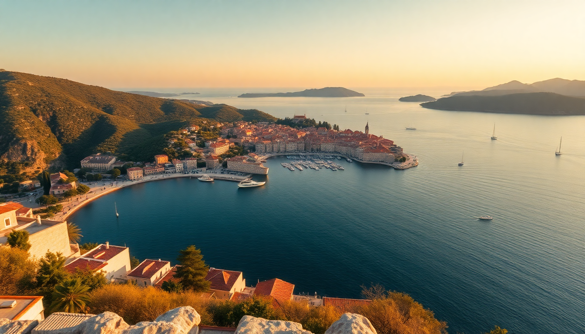

10-Day Croatia Itinerary: Dubrovnik, Split, Hvar & Plitvice

I spent ten days hopping from Dubrovnik’s stone walls up to the waterfalls of Plitvice, and the key lesson was this: Croatia rewards planners who respect ferry schedules and book accommodation early. This itinerary stacks four destinations in a logical northward loop, with enough buffer time for a slow morning by the Adriatic.
How do you get from Dubrovnik to Split efficiently?
The coastal drive along the D8 is scenic but slow — count on three hours without stops. We took a Jadrolinija catamaran instead. It cuts the travel time to about four hours, but more importantly, you arrive right in Split’s harbor, steps from the Diocletian’s Palace. Book the 7:00 AM departure from Dubrovnik’s Gruž Port; the 4:30 PM return leaves you stuck in Split’s evening rush.
- Our pick: Kapetan Luka catamaran (faster than Jadrolinija, slightly pricier)
- Ferry dock: Split’s Port Authority terminal, a 5-minute walk to the Riva promenade
- Avoid: The overnight ferry unless you’re on a tight budget — the seats are cramped
Is Dubrovnik worth the hype, or should you skip it?
Dubrovnik is overcrowded in peak season, but it’s still worth two days if you arrive early and stay inside the Old Town. We booked a room at Hotel Kazbek just outside the Ploče Gate — quieter than the tourist-packed center and a 10-minute walk to the walls. The City Walls walk is best done at 8:00 AM when the cruise ship crowds haven’t arrived yet. Skip the cable car; the line is longer than the view justifies.
- Must-do: Walk the City Walls (2,000 kuna for two people, including Fort Lovrijenac)
- Eat at: Konoba Dalmatino for grilled squid — no tourist menu in sight
- Avoid: Restaurant Nautika (overpriced, better views at a harbor-side bench)
- Neighborhood: Lapad for a quieter beach afternoon
What should you do in Split beyond Diocletian’s Palace?
Split’s real draw is how the Roman palace merges into daily life. We spent a full day just wandering the basement halls (free entry before 10 AM) and the Peristyle square. For a sunset view, climb the Bell Tower of Saint Domnius — the spiral stairs are tight, but the view over the red rooftops and Marjan Hill is worth it. Afterward, grab a table at Konoba Fetivi for black risotto; it’s a 15-minute walk from the palace, so it stays mostly locals.
- Top spot: The Riva waterfront promenade for people-watching at dusk
- Day trip: Take the ferry to Trogir (30 minutes, 40 kuna) — the old town is more intimate than Split’s
- Where to stay: Hotel Art in the Varoš neighborhood — modern rooms, 10 minutes from the palace
Is Hvar worth the ferry ride, or should you day-trip it?
Hvar town is a party hub in July, but in late May it’s pleasantly calm. We spent two nights at Hotel Park Hvar — the pool overlooks the Pakleni Islands, and the breakfast buffet is the best on the island. The real draw is the Fortica Fortress hike (30 minutes up, shade along the way) for a panoramic view that includes the lavender fields in season. For a quieter beach, take a water taxi to Palmizana on the Pakleni Islands — 15 minutes, 100 kuna round trip.
- Ferry from Split: Jadrolinija car ferry (2 hours) or Krilo catamaran (1 hour)
- Don’t miss: The Franciscan Monastery garden — a quiet spot away from the clubs
- Where to eat: Konoba Menego for homemade pasta and local wine
- Overrated: The Hula Hula Beach Club — overpriced cocktails, loud music
How do you visit Plitvice Lakes without the crowds?
Plitvice is a zoo by 11 AM in summer. We stayed at Hotel Jezero inside the park — it’s the only accommodation on-site, and it lets you enter the lakes at 7:00 AM, two hours before the gates open to day-trippers. The Lower Lakes trail (Route A) is the most famous, but the Upper Lakes (Route C) are less crowded and have bigger waterfalls. Bring waterproof shoes; the wooden boardwalks get slippery.
- Entry ticket: Book online at least 48 hours in advance — same-day tickets sell out by 9 AM
- Best route: Start at Entrance 1, take the shuttle to Entrance 2, then walk the Upper Lakes loop
- Where to eat: Restaurant Lička Kuća (near Entrance 1) for lamb under the bell — it’s worth the 20-minute wait
- Avoid: The picnic areas near the big falls — seagulls will steal your sandwich
What’s the best way to get between Split and Plitvice?
Driving is the only practical option. We rented a car from Sixt at Split Airport — 300 kuna per day for a compact, including insurance. The A1 highway to the Plitvice exit takes 2.5 hours, then a 20-minute local road to the park. Book the car for three days: Split to Plitvice, then Plitvice to Zagreb (1.5 hours) for the return flight.
- Alternative: A bus from Split to Plitvice (FlixBus, 4 hours, 150 kuna) — but you lose the flexibility to stop at Krka National Park or the Šibenik waterfront
- Our route: Split → A1 → exit at Gornja Ploča → D1 to Plitvice
- Gas stop: The Janjina station near the Plitvice exit — cheaper than the park’s own pumps
FAQ
Should I book accommodation in Plitvice inside the park or outside? Inside (Hotel Jezero) is worth the premium if you want to beat the crowds. Outside options like Guesthouse Plitvice are cheaper but add a 15-minute drive to Entrance 1. We stayed inside and walked to the lakes before breakfast — no bus queues, no crowds.
Is it better to visit Krka National Park or Plitvice? Plitvice is larger and more dramatic, but Krka lets you swim under the waterfalls. If you have only one day for waterfalls, pick Plitvice. If you want a half-day trip from Split, Krka is closer (90 minutes by car) and more relaxed.
Can I do this itinerary without renting a car? Yes, but you’ll lose flexibility. Ferries connect Dubrovnik, Split, and Hvar. Buses run from Split to Plitvice (FlixBus) and from Plitvice to Zagreb. The trade-off is longer wait times and no stops at smaller towns like Trogir or Šibenik.
Conclusion
- Start in Dubrovnik, then take the catamaran to Split — skip the cable car and walk the walls early.
- Spend two nights in Hvar for the fortress hike and a quiet beach at Palmizana.
- Drive from Split to Plitvice, staying at Hotel Jezero for early access to the Upper Lakes.
- Book everything (ferries, park tickets, rental car) at least two weeks ahead in summer.
- Skip the tourist-trap restaurants near the ports; walk 10 minutes inland for better food at half the price.